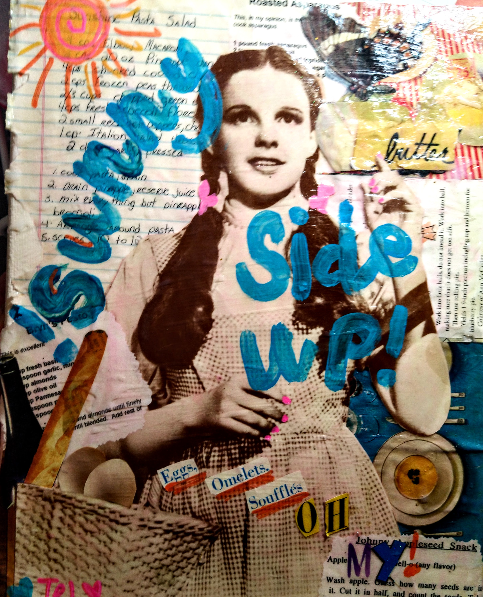

my thoughts and rambles
- 
-
Tell Your Story (excerpt) 1/29/2022
This is a photo of a collage I made for my friend Cora when she moved to another state to chase her dreams. It has references to a number of stories we have from years of friendship. I am a storyteller, both visually and in the written form. My mind is wired to relate to story and metaphor. Many of my workshops are delivered in this way. Not just lessons and projects that demonstrate a technique and show how to do the thing you signed up to do, but delivered with my own stories as a narrative to help you begin to create works of art of your own that become deeply meaningful to you.
When we allow ourselves to go deep in the studio, it shows up in the art we make. The energy we were feeling in the moment is visible in the stroke on the canvas and it translates to the viewer in a visceral way, whether we are there to explain the intent behind the work or not. The viewer is moved by the energy and emotion we've embed into the fiber of the work. .
-
My trial and error process while learning gestural calligraphy (excerpt) 1/1/2022
Calligraphy is where symbol and gesture meet. At its core, calligraphy is writing. But the objective is much more complex than the simple objective of writing: to communicate predetermined meaning. The calligrapher does not simply write words to communicate a fixed thought. The calligrapher uses the pen or the brush as an extension of the whole body, and the whole spirit. The calligraphic mark should convey something metaphysical as well as physical. The spirit should inform the body, which should move in a unified gesture, transferring the energy of both body and spirit into the arm, into the hand, into the pen and finally into the mark. Calligraphy has existed for thousands of years, manifesting independently in multiple cultures across the globe.
With its tradition of conveying meaning beyond the objective into the realm of the unknown, it is no wonder then that calligraphy has appealed to so many abstract artists, especially those concerned with the communicative power of gesture and line.
-